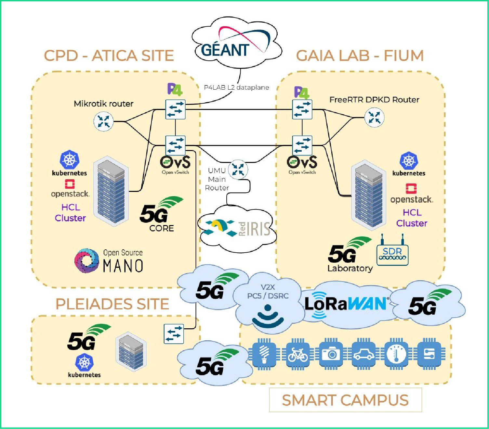
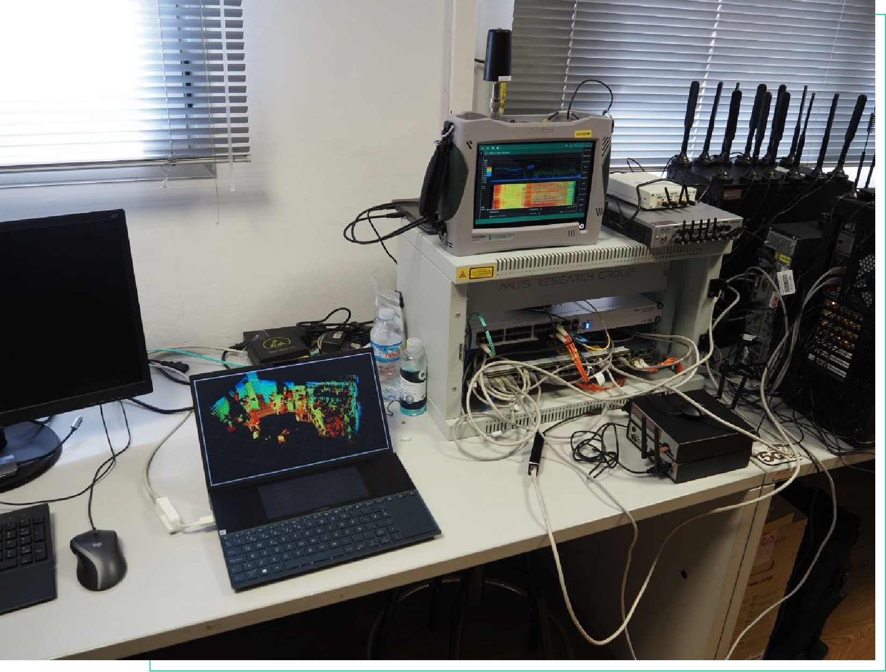
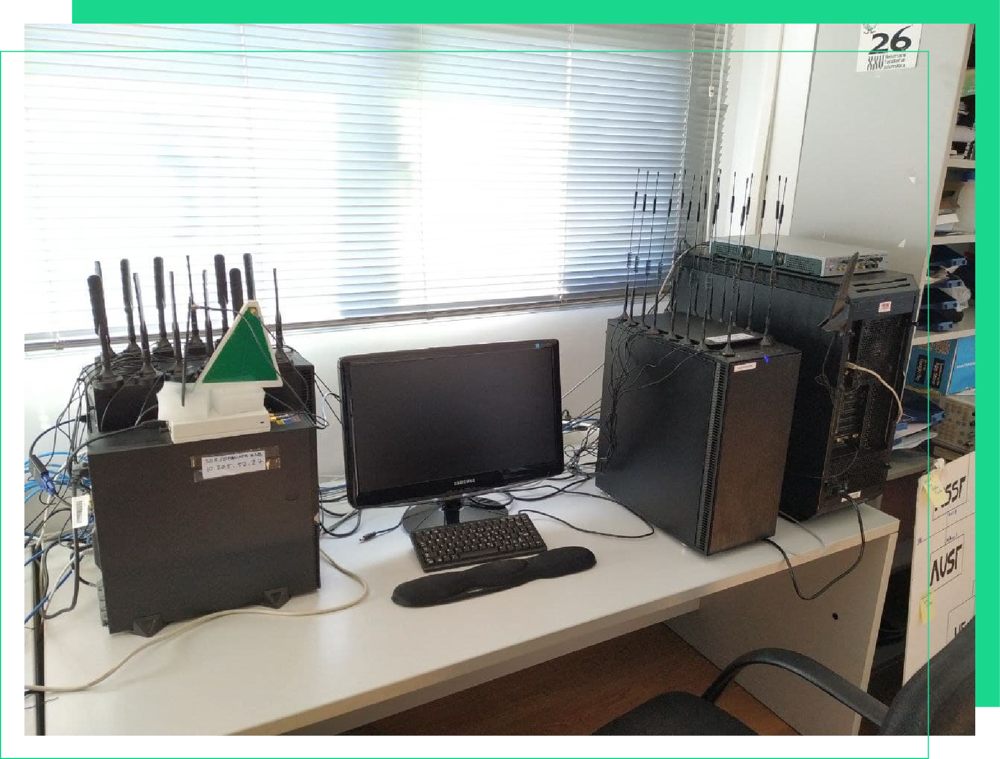
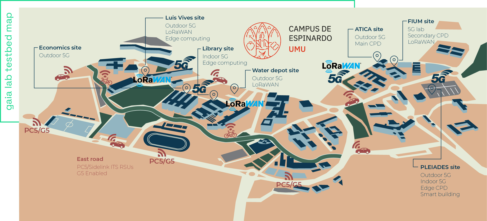

Infraestructura experimental
para la evolución de GAIA-5G
hacia redes B5G/6G
multidominio y autónomas
Infraestructura experimental B5G/6G
Presupuesto económico detallado
Presupuesto total
Importe consolidado de la actuación: 645.989,74 EUR.
Bloques de inversión
Computación · Red e infraestructura de red · Otros recursos (software y UAVs).
NOKIA Modular Private Wireless (MPW)
Precio unitario: 315.000,00 EUR · Unidades: 1 · Importe: 315.000,00 EUR
Servidor ThinkSystem SR650 + NVIDIA A100
Precio unitario: 33.716,87 EUR · Unidades: 2 · Importe: 67.433,74 EUR
Servidor con slots FPGA y switch P4 integrado
Precio unitario: 63.575,00 EUR · Unidades: 1 · Importe: 63.575,00 EUR
Switch P4 Tofino2 con slots FPGA
Precio unitario: 28.995,00 EUR · Unidades: 1 · Importe: 28.995,00 EUR
Servidores edge outdoor Supermicro
Precio unitario: 10.000,00 EUR · Unidades: 2 · Importe: 20.000,00 EUR
DPUs NVIDIA BlueField 2
Precio unitario: 2.539,00 EUR · Unidades: 4 · Importe: 10.156,00 EUR
CWP OBUs Cohda Wireless Vehicular
Precio unitario: 3.105,00 EUR · Unidades: 3 · Importe: 9.315,00 EUR
CWP RSU MK06
Precio unitario: 3.357,00 EUR · Unidades: 2 · Importe: 6.714,00 EUR
RAM 64GB para nodos
Precio unitario: 2.048,00 EUR · Unidades: 32 · Importe: 65.536,00 EUR
Licencias AW2S
Precio unitario: 5.500,00 EUR · Unidades: 2 · Importe: 11.000,00 EUR
Resumen económico: total del presupuesto 645.989,74 EUR
Sobre GAIA·6G
Gaia·6G es la infraestructura experimental de la Universidad de Murcia para evolucionar GAIA-5G hacia redes B5G/6G multidominio, autónomas y validables en condiciones reales.
Integra red, cómputo y servicios en un mismo continuo operativo para coordinar campus, laboratorio indoor, edge distribuido y cloud bajo una lógica de gestión programable extremo a extremo.
El objetivo es habilitar pruebas avanzadas en movilidad conectada, IoT, verticales urbanos e industria con ciclos rápidos de validación, medición y transferencia tecnológica.
Objetivos estratégicos
Evolución de infraestructura
Actualizar GAIA-5G con equipamiento de red, cómputo y almacenamiento orientado a experimentación B5G/6G.
Operación zero-touch
Aplicar principios ZSM para automatizar despliegue, supervisión y adaptación de servicios en entornos heterogéneos.
IA distribuida
Tomar decisiones de orquestación y offloading en tiempo real entre fog, edge y cloud según contexto operativo.
Validación reproducible
Construir escenarios experimentales medibles y comparables para IoT, movilidad conectada y servicios críticos.
Federación de testbeds
Conectar GAIA·6G con plataformas nacionales y europeas para pruebas cooperativas y escalado de resultados.
Transferencia tecnológica
Reducir distancia entre investigación y despliegue real con pilotos junto a empresas y administraciones.
Capacidades tecnológicas
Distribución de tareas según latencia, disponibilidad de recursos y criticidad del servicio.
Control programable de red para aislar, ajustar y escalar servicios por caso de uso.
Entrenamiento e inferencia cooperativa en nodos heterogéneos sin centralizar datos sensibles.
Integración nativa de LoRaWAN/NB-IoT con conectividad de nueva generación para verticales mixtos.
Comunicación vehículo-infraestructura y offloading dinámico para decisiones de baja latencia.
Actuaciones técnicas clave
Ampliación de red 5G y laboratorio indoor
Extensión de cobertura y de capacidad de ensayo para validar servicios B5G/6G en entorno controlado y real.
Despliegue de cómputo especializado
Integración de servidores con GPU, nodos edge y recursos de virtualización avanzada.
Red programable de alto rendimiento
Equipamiento de switching y capacidades P4/SDN para experimentar con planos de control y datos.
Movilidad cooperativa terrestre/UAV
OBUs, RSUs y recursos de sensorización para escenarios ITS y operación asistida en tiempo real.
Plataforma de datos y trazabilidad
Canalización de datos, almacenamiento y observabilidad para experimentos reproducibles.
Cronograma de ejecución
Fase 01
Obtención de equipamiento
Adquisición de infraestructura prioritaria para red, cómputo y validación de casos.
Fase 02
Despliegue e integración
Puesta en servicio de nodos y plataformas sobre la base GAIA existente.
Fase 03
Verificación técnica
Comprobación de rendimiento, interoperabilidad y estabilidad de los elementos desplegados.
Fase 04
Validación experimental
Ejecución beta de escenarios y evaluación de madurez operativa de la infraestructura.
Arquitectura técnica GAIA·6G
Capa de acceso
IoT, LP-WAN y 5G/B5G para captura y transporte de datos en escenarios campus, urbanos e industriales.
Capa edge/MEC
Procesamiento cercano al dato para inferencia, control y respuesta en baja latencia.
Capa core/cloud
Analítica intensiva, entrenamiento de modelos y coordinación global de recursos y servicios.
Casos de uso avanzados
Smart Campus conectado
Monitorización en tiempo real de recursos, movilidad y energía para operación más eficiente y sostenible.
Movilidad cooperativa ITS
Coordinación vehículo-infraestructura con apoyo edge para decisiones de tráfico en baja latencia.
Autoprotección distribuida
Detección cooperativa de anomalías y respuesta coordinada entre nodos.
Operación con UAV
Integración de drones para captación de datos y servicios de inspección inteligentes.
Federación de experimentos
Ejecución de pruebas conjuntas con otros testbeds para validar interoperabilidad y escalado.
Infraestructura actual de partida
Red 5G en campus
Despliegue propio con cobertura exterior y laboratorio indoor para pruebas avanzadas.
IoT y LP-WAN
Capas LoRaWAN/NB-IoT integradas con la infraestructura experimental.
Backbone programable
Enlaces 40/100 Gbps con soporte SDN/P4 para escenarios de alta exigencia.
Cómputo distribuido
Clústeres Proxmox, OpenStack, Kubernetes y entornos hiperconvergentes.



Infraestructura multiacceso del Campus de Espinardo
Con los dispositivos, nodos y tecnologías integrados en una red heterogénea multiacceso, el mapa del Campus de Espinardo muestra la base territorial de GAIA·6G y su conexión con gaia lab para experimentación coordinada en escenarios reales.

Ecosistema y federación
Interoperabilidad abierta
GAIA·6G se diseña para operar con infraestructuras nacionales y europeas, acelerando validación conjunta y compartición de resultados.
Programas y proyectos vinculados
R3CAV, INSPIRE5G+, CERBERUS, NANCY, RIGOUROUS, AI@Edge, PERSEO, 6G·CoCoNet y otras iniciativas cooperativas.
Impacto y explotación
La infraestructura se orienta a impacto real: investigación transferible, validación reproducible y adopción progresiva en verticales estratégicos.
Investigación
Refuerzo de capacidades científicas y docentes en 5G/B5G/6G e IA distribuida.
Ciencia abierta
Publicación de resultados, datos y metodologías con foco en reproducibilidad.
Transferencia
Mayor tracción con industria y administraciones en pilotos y demostradores.
Escalabilidad
Base tecnológica para nuevos servicios en movilidad, sostenibilidad e industria.
Publicaciones
Publicaciones aceptadas (con DOI)
- G. Ingles-Munoz, A. Gil-Martinez, J. A. Lopez-Pastor, A. Algaba-Brazalez, A. Skarmeta and J. L. Gomez-Tornero, "Integrated Sensing and Communication Using a Smart Leaky-Wave Antenna," in IEEE Transactions on Network Science and Engineering, vol. 13, pp. 6871-6890, 2026, doi: 10.1109/TNSE.2026.3662043.
- A. Gil-Martinez, J. Perez-Valero, J. A. Lopez-Pastor, J. L. Gomez-Tornero and A. Skarmeta-Gomez, "Ambiguity Resolution of Two Conformal Leaky-Wave Antennas via Deep Learning," 2025 International Conference on Indoor Positioning and Indoor Navigation (IPIN), Tampere, Finland, 2025, pp. 1-7, doi: 10.1109/IPIN66788.2025.11213126.
- A. Gil-Martinez, D. Canete-Rebenaque, M. Poveda-Garcia, A. Algaba-Brazalez and J. Luis Gomez-Tornero, "Multibeam Microstrip Leaky-Wave Antenna Array for Passive 2-D Scanning in the 5 GHz Wi-Fi Band," in IEEE Open Journal of Antennas and Propagation, vol. 7, no. 2, pp. 718-727, April 2026, doi: 10.1109/OJAP.2025.3624307.
- A. Gil Martinez, A. Rabadan-Parra, D. Canete-Rebenaque, A. Skarmeta and J. L. Gomez Tornero, "Vehicle localization and tracking for urban toll collection using BLE smartphones and multi beam antenna unit," in IEEE Transactions on Intelligent Transportation Systems, doi: 10.1109/TITS.2026.3673855.
Publicaciones aceptadas (DOI pendiente)
- A. Gil-Martinez, R. Pedreno-Martinez, A. Algaba-Brazalez, D. Canete-Rebenaque, A. Skarmeta and J. L. Gomez-Tornero, "Triangular Arrays of Frequency-Scanned Antennas for Efficient Fully-Azimuthal 1D and 2D Direction Finding Using Bluetooth Beacons," in 2026 20th European Conference on Antennas and Propagation (EuCAP).
- A. Gil-Martinez, Aritra Roy, Julien Sarrazin and A. Skarmeta, "Enhanced RSSI-Based DoA Estimation with Monopulse Ambiguity Suppression Using a Frequency-Beam Scanning LWA," in 2026 International Radar Symposium.
- A. Gil-Martinez, A. Skarmeta and J. L. Gomez-Tornero, "A 2-D Leaky-Wave Antenna Array for joint sensing, communication and wireless power transfer," in The 12th International Conference on Antennas and Electromagnetic Systems, Catania, Sicily, Italy, 3 - 6 June, 2026.
- A. Gil-Martinez, J. Perez-Valero, Julien Sarrazin, Guido Valerio, A. Skarmeta and J. L. Gomez-Tornero, "Monopulse-based blind spot correction using a full-azimuthal leaky-wave antenna array," in The 12th International Conference on Antennas and Electromagnetic Systems, Catania, Sicily, Italy, 3 - 6 June, 2026.